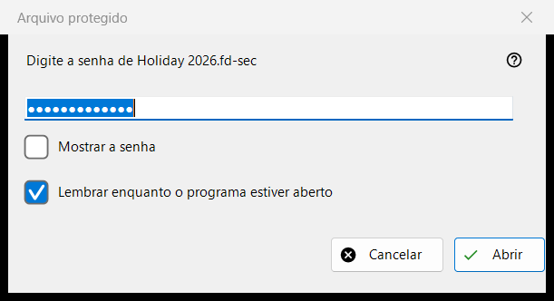
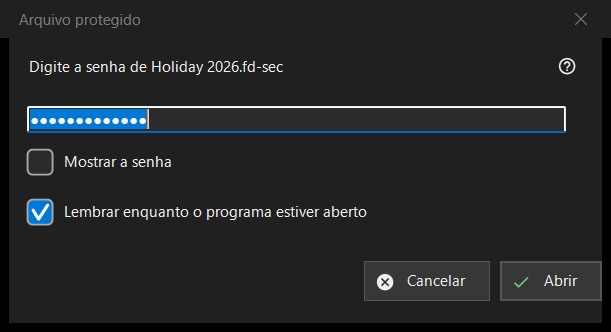

Arquivo protegido
Finalidade
Pede a senha de um contêiner protegido, um arquivo .fd-sec, quando ele aparece na tela. A janela se abre quando você pressiona Enter ou clica no arquivo bloqueado, e sozinho quando você para em um arquivo assim; uma apresentação de slides pula os arquivos protegidos e os conta. O conteúdo é mostrado a partir da memória: nada descriptografado é gravado no disco. Somente na versão moderna do programa.


Nesta ordem
- Digite a senha; ela fica oculta.
- Marque «Lembrar enquanto o programa estiver aberto» se outros contêineres usam a mesma senha.
- Pressione «Abrir» (Enter).
- «Cancelar» (Esc) deixa o arquivo bloqueado.
Os elementos
A senha
O pedido nomeia o arquivo. «Mostrar a senha» começa desativado. A senha é usada exatamente como digitada e verificada fora da thread principal, de modo que o programa continua responsivo enquanto a lenta derivação da chave roda; nunca é gravada no registro, em um arquivo nem no armazenamento do Windows.
Lembrar enquanto o programa estiver aberto
Marcado por padrão. Mantém a senha na memória até o programa ser fechado, e só depois de um contêiner ter realmente aberto com ela; o programa a experimenta então em silêncio nos contêineres seguintes e só pergunta quando ela não serve.
Uma recusa e uma senha vazia
Depois de uma tentativa que falhou, a janela volta com «Não abriu: a senha pode estar errada, o arquivo pode nunca ter sido um contêiner, ou foi alterado.» Esses casos parecem iguais de propósito: uma chave errada e um byte alterado não se distinguem. Um contêiner danificado ou não suportado recebe a sua própria mensagem e nenhuma janela de senha. Uma senha vazia é aceita, mas o primeiro Enter mostra «Uma senha vazia não é proteção: esse arquivo fica apenas escondido de um olhar casual. Pressione novamente para abri-lo.» e o segundo toque abre o arquivo.
Cancelar
Cancelar, Esc e a caixa de fechar são um único caminho e não mudam nada. O arquivo mostra «É preciso uma senha - pressione Enter ou clique no arquivo» e o programa não a pede de novo enquanto aquela pasta continuar aberta. Enter ou um clique no arquivo a pedem de novo.